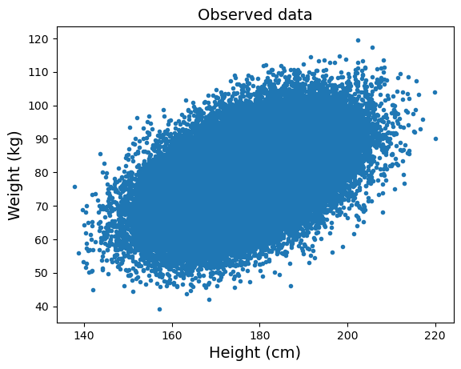
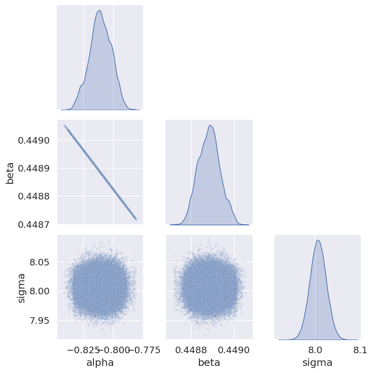

Last time, we discussed how MCMC is used in Bayesian inference to compute the posterior probability distribution: $$ P(\theta|x) \propto P(x|\theta)P(\theta) $$
$x$ represents the data, $\theta$ represents the parameters of the model, $P(x|\theta)$ is the likelihood of data $x$ given the model parameters $\theta$, and $P(\theta)$ is the prior.
Let's consider an example. Say we have a model of correlation between people's weight and height: $$ W_i = \alpha + \beta H_i + \epsilon_i $$ where $\epsilon_i \sim N(0, \sigma^2)$ is a normally distributed random variable.
The parameters of this model are $\alpha$, $\beta$, and $\sigma$.
Assuming we took this set of data data $\{H_i, W_i\}$:
The goal is to infer the parameters $\alpha$, $\beta$, and $\sigma$.
Let's assume that the prior distributions are: $$ \begin{align} P(\alpha) &= N(0, 10^2) \\ P(\beta) &= N(0, 10^2) \\ P(\sigma) &= 0.1 \quad(\text{uniform with } 0 <\sigma < 10) \end{align} $$
The posterior distribution is then: $$ P(\alpha, \beta, \sigma|\mathbf{W}, \mathbf{H}) \propto \left[\prod_{i=1}^N P(W_i, H_i|\alpha, \beta, \sigma)\right]P(\alpha)P(\beta)P(\sigma) $$
How to compute the probability $P(W_i, H_i|\alpha, \beta, \sigma)$?
Under the model assumption, the data is normally distributed with mean $\alpha + \beta H_i$ and standard deviation $\sigma$: $$ P(W_i, H_i|\alpha, \beta, \sigma) = \frac{1}{\sqrt{2\pi\sigma^2}}\exp\left(-\frac{(W_i - \alpha - \beta H_i)^2}{2\sigma^2}\right) $$
Normal Metropolis-Hastings would require us to start from some parameter vector $(\alpha_0, \beta_0, \gamma_0)$, and come up with a proposal $g$ that generates the next triplet $(\alpha_1, \beta_1, \gamma_1)$. Then we accept this new triplet according to the standard acceptance probability.
However, in higher dimensions, constructing a proposal distribution may be non-trivial, and acceptance rate can be rather low.
The Gibbs sampling technique draws random samples one dimension at a time. So for our example, we sample the three parameters one by one: $$ \begin{align} \alpha_{n+1} &\sim P(\alpha|\beta_n, \sigma_n, \mathbf{W}, \mathbf{H}) \\ \beta_{n+1} &\sim P(\beta|\alpha_{n+1}, \sigma_n, \mathbf{W}, \mathbf{H}) \\ \sigma_{n+1} &\sim P(\sigma|\alpha_{n+1}, \beta_{n+1}, \mathbf{W}, \mathbf{H}) \end{align} $$
For example, the distribution for $\alpha$ alone can be written as: $$ \begin{align} P(\alpha|\beta_n, \sigma_n, \mathbf{W}, \mathbf{H}) &\propto P(\alpha, \beta_n, \sigma_n|\mathbf{W}, \mathbf{H}) \\ &\propto \left[\prod_{i=1}^N P(W_i, H_i|\alpha, \beta_n, \sigma_n)\right]P(\alpha)P(\beta_n)P(\sigma_n) \\ &\propto \left[\prod_{i=1}^N \frac{1}{\sqrt{2\pi\sigma_n^2}}\exp\left(-\frac{(W_i - \alpha_n - \beta_n H_i)^2}{2\sigma_n^2}\right)\right]P(\alpha) \end{align} $$
In this particular example, the distribution for $\alpha$ is a normal distribution (times the prior), and we can write down its mean and variance: $$ P(\alpha|\beta_n, \sigma_n, \mathbf{W}, \mathbf{H}) = \mathcal{N}\left(\frac{\sum_{i=1}^N(W_i - \beta_n H_i)}{N}, \frac{\sigma_n^2}{N}\right)P(\alpha) $$
In more complex cases, we will still need to use the 1D Metropolis algorithm to sample this distribution.
Similarly, we can write down the distributions for $\beta$ and $\sigma$: $$ \begin{align} P(\beta|\alpha_{n+1}, \sigma_n, \mathbf{W}, \mathbf{H}) &= \mathcal{N}\left(\frac{\sum_{i=1}^N(W_i - \alpha_{n+1})H_i}{\sum_{i=1}^NH_i^2}, \frac{\sigma_n^2}{\sum_{i=1}^NH_i^2}\right)P(\beta) \\ P(1/\sigma^2|\alpha_{n+1}, \beta_{n+1}, \mathbf{W}, \mathbf{H}) &= \text{Gamma}\left(\frac{N}{2}, \frac{\sum_{i=1}^N(W_i - \alpha_{n+1} - \beta_{n+1}H_i)^2}{2}\right)P(1/\sigma^2) \end{align} $$
The Gamma distribution is defined as: $$ \text{Gamma}(k, \theta) = \frac{1}{\Gamma(k)\theta^k}x^{k-1}e^{-x/\theta} $$
The result of carrying out the full Gibbs sampling algorithm on our example can be plotted as:
This is called a pair plot. Diagonal plots are simply the histograms of the individual parameters, and off-diagonal plots represent the cross-correlation between a pair of parameters.
Another way to think of this is that it visualizes the high-dimensional parameter space one 2D slice at a time.
Nowadays there are many MCMC packages for Bayesian inference. For example, PyMC is a Python package that encapsulates the whole Bayesian modelling process using MCMC methods.
Over the past 3 weeks or so, we have discussed a wide range of Monte Carlo methods: